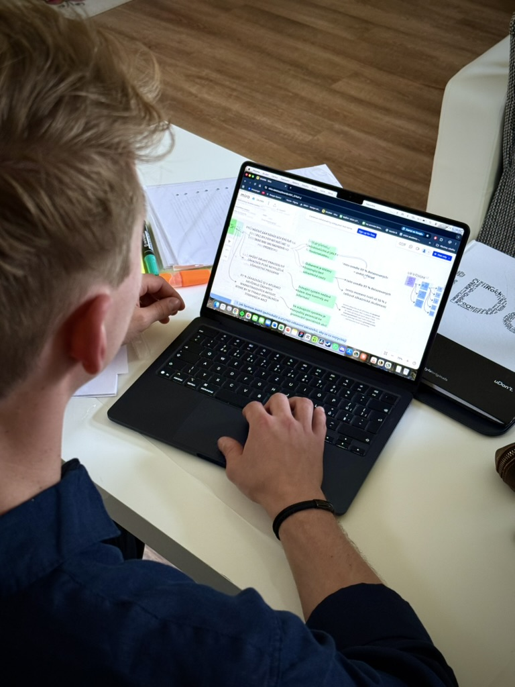
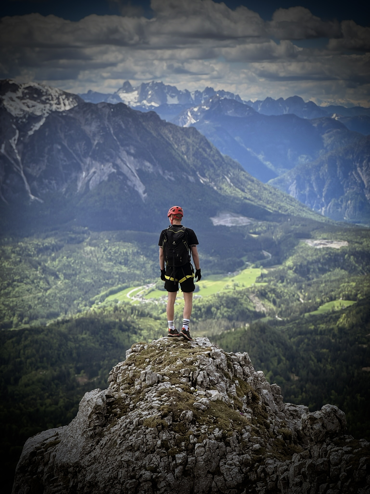
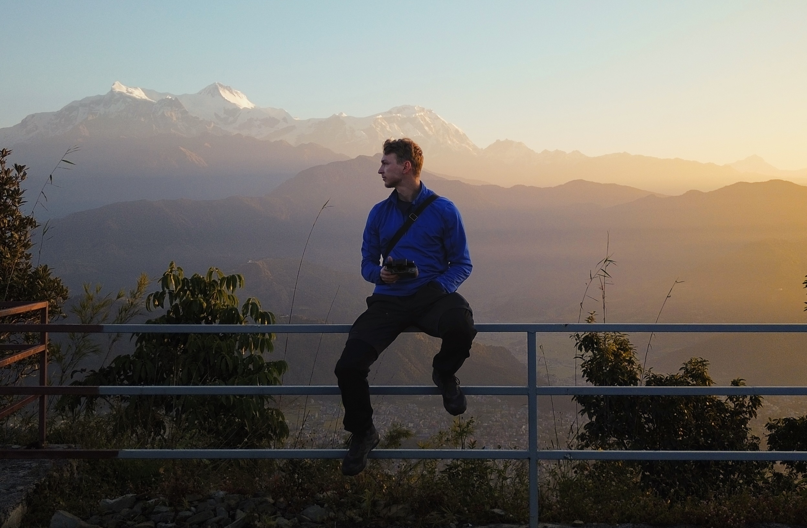

K UX/UI designu jsem poprvé přičichl na vysoké škole při navrhování aplikace pro autonomní zavlažování. Tehdy jsem si začal uvědomovat, jak moc detaily v digitálním prostředí ovlivňují naše každodenní fungování.
Přestože jsem vystudoval strategický rozvoj podniku, v posledním ročníku mě naprosto pohltil předmět Service Design, na který jsem následně navázal rekvalifikací v UX/UI Design Academy.
Kreslit vizuálně dokonalé obrazovky už dnes umí kdekdo, to beru jako standard. Kde však vnímám svoji designérskou výhodu je naslouchání lidem. Rád řeším problémy, které lidi reálně trápí. Když jsem pracoval jako saunér, zákazníci si neustále stěžovali na naši věrnostní aplikaci. To mě motivovalo k jejímu kompletnímu redesignu. Věřím, že nejlepší design vzniká nasloucháním, ne odhadováním.


A když nesedím zrovna u Figmy? Moji životní filozofii nejlépe vystihuje lehká alergie na slovo komfort (ti, kteří si mysleli, že se mnou jedou na odpočinkovou dovolenou, by o tom mohli napsat knihu) a radost z hledání nových výzev. Baterky si totiž nejraději dobíjím lezením po horách, basketbalem nebo zachycováním světa z výšky pomocí dronu.
